Cho’s FinBlog
About
Source Code
Report a Bug
FinBlog
홈
모든 글 보기
금융 데이터 처리
분수 차분
머신러닝을 활용한 트레이딩
트레이딩 개요
시장 데이터 수집
가격 모멘텀 라벨링
피쳐 생성
피쳐 선정
매매 시그널 분류
매매 규칙
매매 신뢰도 측정과 전략 강화
시스템 리스크 분석
시스템 리스크 개념
시스템 리스크 측정 - 선행연구
시스템 리스크 측정 - 선행연구 요약
시스템 리스크 측정 - 선행연구 (거시경제)
시스템 리스크 측정 - 선행연구 (시장위험)
시스템 리스크 측정 - 선행연구 (금융기관 위험)
시스템 리스크 측정 - 선행연구 (부도확률모형 위험)
시스템 리스크 측정 - 선행연구 (네트워크)
시스템 리스크와 머신러닝
시스템 리스크와 머신러닝 - 선행연구
시스템 리스크와 머신러닝 - 향후 연구 방향
Categories
big data
classification
cycle
data
default
enhancing
feature
feature selection
financial institution
fractional differentiation
labeling
machine learning
measures
momentum
network
risk
signals
stationarity
systemic risk
trading
Order By
Default
Title
Author
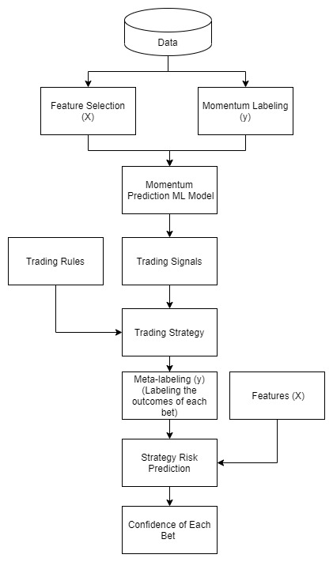
머신러닝을 이용한 트레이딩: (0) 트레이딩 개요
trading
머신러닝을 이용한 모멘텀 예측과 전략 강화
Cheonghyo Cho
머신러닝을 이용한 트레이딩: (1) 시장 데이터 수집
trading
data
파이썬 라이브러리인
FinanceDataReader
와
yfinance
을 이용한다. 순매수량 데이터는 대신증권 API로 받은 데이터를 이용한다.
Cheonghyo Cho
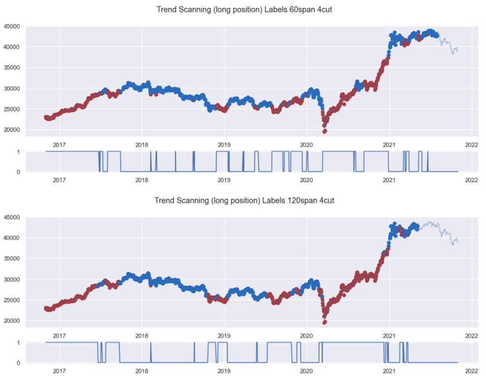
머신러닝을 이용한 트레이딩: (2) 가격 모멘텀 라벨링
trading
labeling
momentum
삼성전자 종가를 기준으로 가격의 트렌드와 트렌드 강도(모멘텀)을 측정하여 이를 라벨(label)로 사용한다.
Cheonghyo Cho
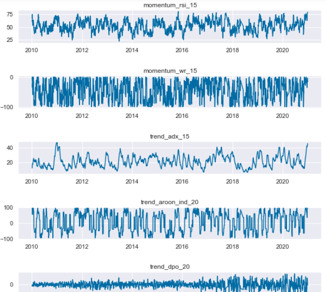
머신러닝을 이용한 트레이딩: (3) 피쳐 생성
trading
feature
momentum
앞서 구한 시장 데이터를 이용하여 피쳐(feature)를 생성한다.
Cheonghyo Cho
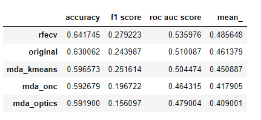
머신러닝을 이용한 트레이딩: (4) 피쳐 선정
trading
feature selection
RFECV 기법으로 선정한 피쳐가 가장 좋은 성능을 보인다.
Cheonghyo Cho
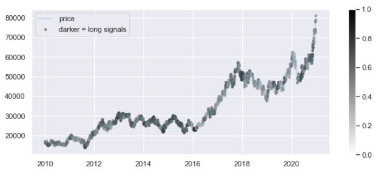
머신러닝을 이용한 트레이딩: (5) 매매 시그널 분류
trading
signals
classification
machine learning
모멘텀 분류기 (Momentum Classifier)
Cheonghyo Cho
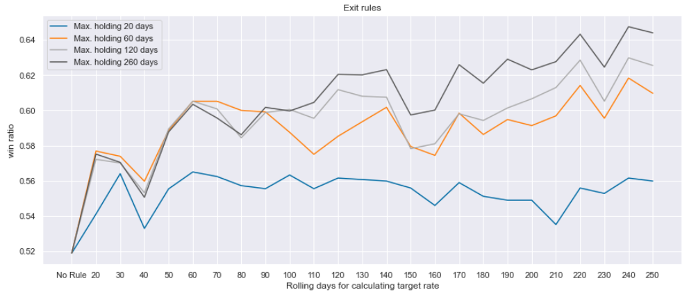
머신러닝을 이용한 트레이딩: (6) 매매 규칙
trading
Trading rules: 매수 진입만 허용
Cheonghyo Cho
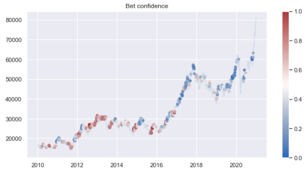
머신러닝을 이용한 트레이딩: (7) 매매 신뢰도 측정과 전략 강화
trading
enhancing
machine learning
전략 강화 모형
Cheonghyo Cho
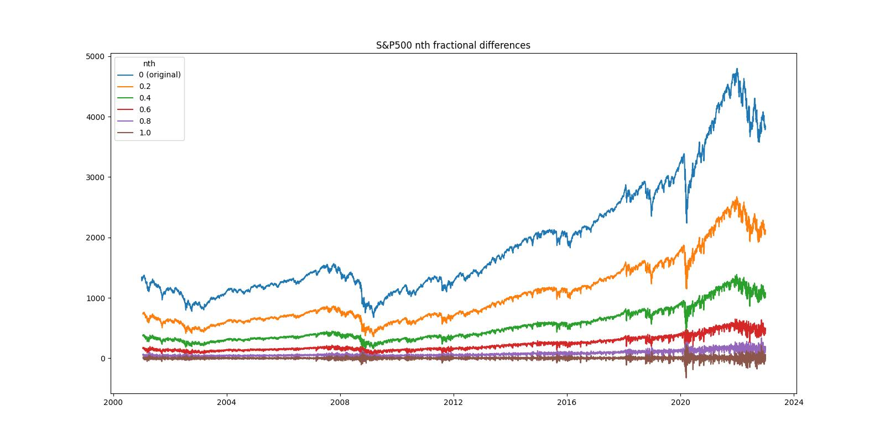
분수 차분 (fractional differentiation)
fractional differentiation
data
stationarity
가격과 같은 비정상성의(non-stationary) 시계열 자료는 통계모형 등의 분석에 적합하지 않다. 따라서 보통 시계열 자료를 (정수 단위로; 1차, 2차 …) 차분하여 정상적(stationary) 상태로 만들어 분석에 사용한다.
Cheonghyo Cho
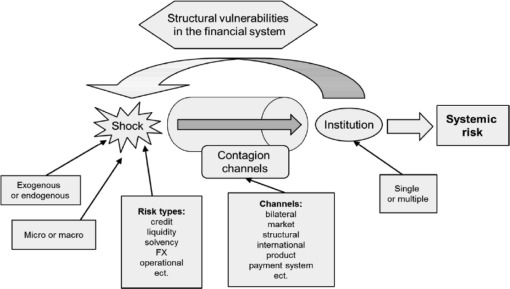
시스템 리스크 분석: (1) 시스템 리스크 개념
systemic risk
risk
시스템 리스크 (systemic risk):
금융중개기능이 원활히 작동하지 못하여 경제성장과 사회후생에 심각하게 손상을 줄 정도의 심각한 금융불안정을 지칭하는 시스템적 사건이 발생할 위험 - 유럽중앙은행(ECB(2010))
Cheonghyo Cho
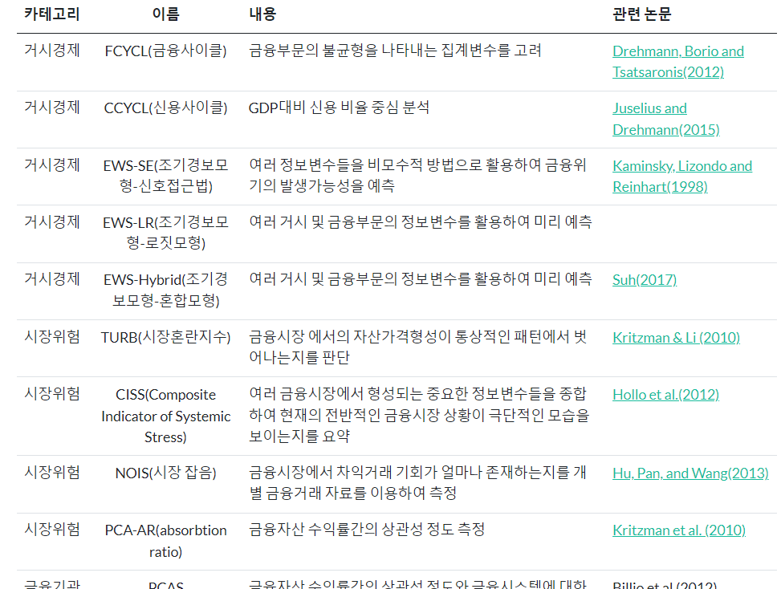
시스템 리스크 분석: (2) 시스템 리스크 측정 방법 - 선행연구 요약
systemic risk
measures
시스템 리스크를 측정하는 기존의 방법에 대해 알아본다. 각 서베이 논문에서 정리한 표를 살펴보자.
Cheonghyo Cho
시스템 리스크 분석: (2-1) 거시경제지표를 활용한 경제전체 위험도 측정 방법
systemic risk
cycle
시스템리스크 측정 방법 중 거시경제지표를 활용한 경제전체 위험도를 살펴본다.
Cheonghyo Cho
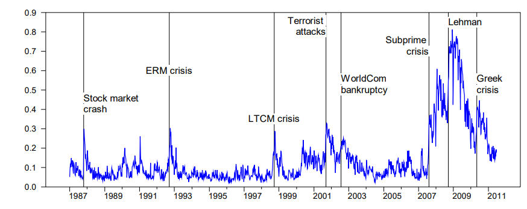
시스템 리스크 분석: (2-2) 시장위험 측정 방법
systemic risk
시스템리스크 측정 방법 중 시장위험을 측정하는 방법들을 살펴본다.
Cheonghyo Cho
시스템 리스크 분석: (2-3) 금융기관 단면적 위험 측정방법
systemic risk
financial institution
시스템리스크 측정 방법 중 다수의 금융기관이 동시에 위험에 처하게 되는 위험을 직접적으로 측정하는 법을 알아본다. 금융기관의 부도사건에 대한 다변수 확률분포에 대한 정보를 추출하고 이를 이용하여 시스템리스크를 측정한다.
Cheonghyo Cho
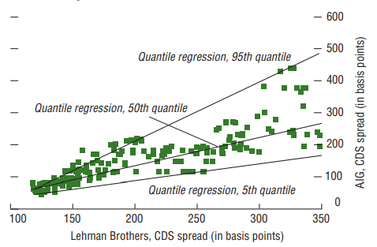
시스템 리스크 분석: (2-4) 금융기관 부도확률 위험 측정방법
systemic risk
financial institution
default
시스템리스크 측정 방법 중 금융기관의 부도와 같은 위험사건을 명시적으로 정의하는 측정하는 법을 알아본다.
Cheonghyo Cho
시스템 리스크 분석: (2-5) 네트워크 측정방법
systemic risk
financial institution
network
금융기관들간의 직접적인 연계성이 존재하는 경우에 시스템리스크 측면에서 어떤 영향을 미치는지 효과적으로 분석한다.
Cheonghyo Cho
시스템 리스크 분석: (3-1) 시스템 리스크와 머신러닝 - 선행연구
systemic risk
measures
network
machine learning
G. Kou
et al.
(2019)
Cheonghyo Cho
시스템 리스크 분석: (3-2) 시스템 리스크와 머신러닝 - 향후 연구 방향
systemic risk
network
big data
machine learning
G. Kou
et al.
(2019)
Cheonghyo Cho
No matching items
홈
분수 차분